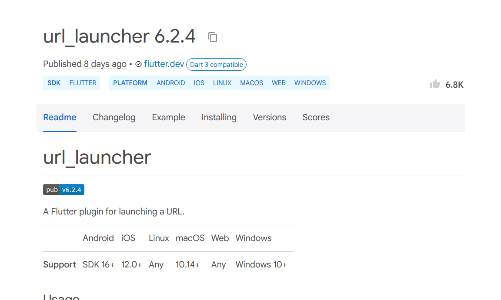
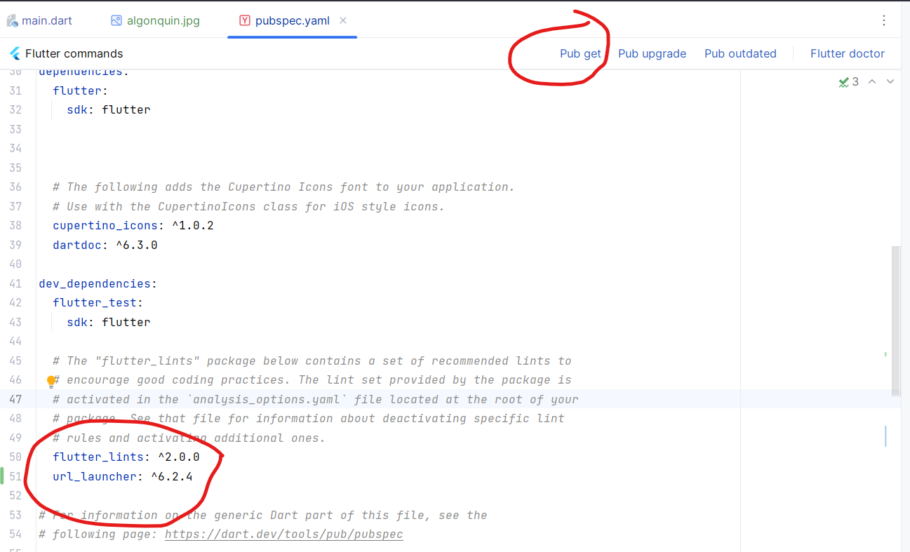
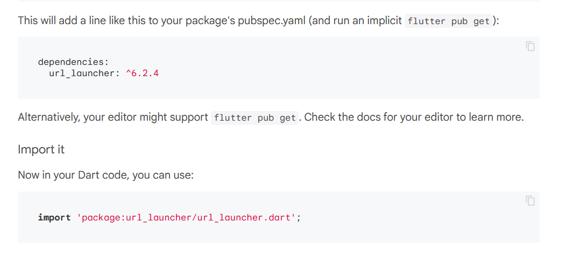

Modern applications have adopted the Repository pattern (https://www.dhiwise.com/post/the-complete-guide-to-the-repository-pattern-in-flutter) . The pattern is that all the stored data is in a central repository class that is accessible anywhere in the app. Usually this is done by creating a class with static variables:
class DataRepository{
static String loginName;
static int age;
}
Then in your pages, you set these values whenever the user clicks on something:
onPress: () {
DataRepository.loginName = "Something";
Navigator.pushNamed(context, "/secondPage");
},
Then when the new page is loading, you can access the value from other pages:
Text("Welcome back: " + DataRepository.loginName);
The repository should hold any variables that are going to be accessed on multiple pages within the app, as well as data that gets saved and loaded from a database or from a network connection. The data repository is responsible only for the application's data and nothing else.
If your device supports sending emails, sending text messages or making phone calls then you can launch those apps from within your program. We will use extra software packages called url_launcher that implement the phone dialing. You can either run this command in the terminal:
flutter pub add url_launcher
Or you can do it manually by opening the pubspec.yaml file, add this line below the section dependencies:
url_launcher: ^5.5.0
The first part means the library name, and the ^5.5.0 means version 5.5.0
To find other software packages for your apps, go to this website: https://pub.dev/packages. Put in the name "url_launcher" in the search field and hit enter. Select the "url_launcher" package from the results.

The page should show what the latest version of the library is, in this case 6.2.4. Change the line in pubspec.yaml file to the latest version. Then to download that library from the online repository, you need to click the "pub get" button in the pubspec.yaml editor:

This url_launcher library lets you launch URLs. For instance, you can run:
launch("https://www.algonquincollege.com")
however you need to import the library into your code. If you look at the web page for the package, it gives you the import statement:

If you add import 'package:url_launcher/url_launcher.dart'; then you can use the function and it should launch a web browser
You can use the same function to dial a phone number, you just use "tel:" protocol instead of "http://". For example:
launch("tel:888 123 4567")
However, your app might be running on a desktop computer that doesn't support making phone calls. To check if your app supports the URL that you are giving it, there is a function called canLaunch( ) that will return true if your device can do whatever the URL is wanting to launch. However, canLaunch() is asynchronous, meaning that the function will run on another thread. To handle asynchronous returns, we add a .then( ) to the function call.
canLaunch("tel: 888 123 4567").then(
(itCan) {
if(itCan)
launch("tel:888 123 4567")
}
else
Snackbar.messenger("You can't make phone calls from this device");
)
The function canLaunch() returns a Future<bool> meaning that when the function returns, it will return a bool. In the then( ) function after it, you must supply a bool parameter, which in our example is (itCan)
Here is a short tutorial if you want to learn how to take pictures with your device's camera: https://medium.com/@fernnandoptr/how-to-use-camera-in-flutter-flutter-camera-package-44defe81d2da